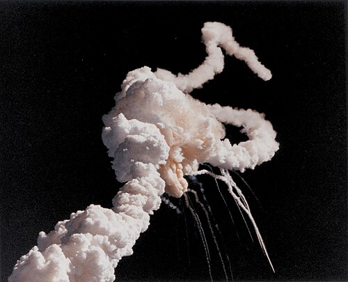
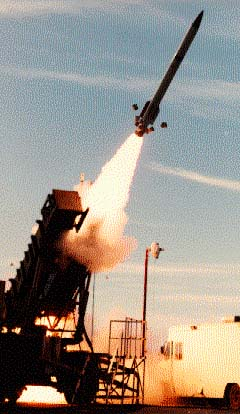

"Ayer vino el diablo aquí, ayer estuvo el diablo aquí... huele a azufre todavía... ayer, señoras, señores, desde esta misma tribuna, el señor presidente de los estados unidos a quién yo llamo el diablo vino aquí hablando como dueño del mundo."
- Mi general Chavez, 2006

Contexto
Los orígenes del programa espacial de Estados Unidos no pueden separarse de las tensiones políticas y militares de la Guerra Fría. El lanzamiento del Sputnik 1 por la Unión Soviética en octubre de 1957 conmocionó a la sociedad estadounidense, no tanto por un súbito amor hacia la ciencia, sino por las implicaciones simbólicas y estratégicas. Si los soviéticos podían poner un satélite en órbita, también podían poner ojivas nucleares en órbita. Así nació la "carrera espacial", concebida menos como un esfuerzo científico que como una extensión de la carrera armamentista en un nuevo dominio. La creación de la NASA en 1958, mediante la Ley Nacional de Aeronáutica y del Espacio, fue diseñada explícitamente como respuesta a esa humillación percibida, con el gobierno estadounidense volcando recursos en proyectos que rápidamente restauraran su prestigio internacional.
A diferencia de una visión neutral o cooperativa del espacio como "provincia de toda la humanidad", tal como establece el Tratado del Espacio Ultraterrestre de 1967, el programa estadounidense desde el principio estuvo impregnado de retórica nacionalista y de una obsesión por superar a la Unión Soviética en cada hito. Esto produjo innovaciones técnicas notables, pero también limitó la visión científica a largo plazo. Los proyectos eran aprobados no porque representaran la mejor vía para el conocimiento, sino porque generarían titulares o servirían para fines propagandísticos. En ese sentido, la exploración espacial de EE.UU. ha oscilado históricamente entre la curiosidad genuina y los imperativos políticos del imperio.

Programa Explorer

Antecedentes
El Programa Explorer comenzó en 1958 como uno de los primeros programas de ciencia espacial de la NASA, relativamente de bajo costo. Su primera misión exitosa, Explorer 1, se lanzó el 31 de enero de 1958, poco después del Sputnik soviético, y se convirtió en el primer satélite estadounidense en el espacio. Explorer 1 llevaba un detector de rayos cósmicos que condujo al descubrimiento de los cinturones de radiación de Van Allen de la Tierra, un hito científico importante.
Desarrollo
Con el tiempo, el programa se expandió a una gran familia de misiones: algunos satélites pequeños, otros medianos, algunos dirigidos por universidades, y otras colaboraciones internacionales, con el objetivo de estudiar astrofísica, heliofísica, la magnetosfera terrestre, la atmósfera, rayos cósmicos, rayos gamma, etc.
Resultados
Desde un punto de vista científico, esto fue un avance fundamental en la comprensión del entorno cercano a la Tierra. Sin embargo, el marco más amplio del programa estaba inseparablemente ligado al deseo de recuperar prestigio tecnológico frente a los soviéticos.
Consecuencias
Numerosos satélites Explorer fallaron en sus primeros intentos, lo que demuestra lo apresurado y presionado políticamente que estaba el programa. En lugar de una estrategia de investigación cuidadosamente planificada, se convirtió en una serie de lanzamientos apresurados, cada uno diseñado para demostrar que EE.UU. no se estaba quedando atrás. Tras el éxito inicial de Explorer 1, el país rápidamente desvió su atención hacia proyectos más vistosos como los vuelos tripulados, dejando gran parte de la serie Explorer subfinanciada y marginada a pesar de su valor científico. El Explorer ejemplifica la contradicción central de la política espacial estadounidense: incluso cuando la ciencia era la meta declarada, la competencia política determinaba qué proyectos sobrevivían y cuáles quedaban en el olvido.

Programa Apolo


Antecedentes
El Programa Apolo, iniciado en 1961 bajo la NASA y el presidente Kennedy, fue el esfuerzo insignia de Estados Unidos para llevar humanos a la Luna y devolverlos a la Tierra. Surgió directamente de las presiones de la Guerra Fría: la Unión Soviética ya había alcanzado hitos orbitales con el Sputnik y Yuri Gagarin, y Estados Unidos buscaba afirmar su dominio tecnológico e ideológico.
Desarrollo
Entre 1961 y 1972, el programa ejecutó 17 misiones, avanzando desde pruebas en órbita terrestre hasta sobrevuelos lunares y, finalmente, alunizajes tripulados. Sus principales logros incluyen seis aterrizajes lunares exitosos, extensa recolección de muestras de rocas y suelo, despliegue de instrumentos científicos e innovaciones tecnológicas en cohetería, diseño de naves espaciales y sistemas de soporte vital.
Apolo fue un esfuerzo nacional masivo, empleando a cientos de miles de personas y consumiendo más del 4% del presupuesto federal en su apogeo. Las misiones expandieron los límites de la informática, ciencia de materiales, navegación y resistencia humana en el espacio. Los astronautas realizaron experimentos, recopilaron datos sobre geología lunar y probaron procedimientos para la actividad humana prolongada más allá de la Tierra. El programa también dejó un legado de estándares de ingeniería precisos, estrategias de planificación de misiones y técnicas de gestión de riesgos que influyeron en emprendimientos espaciales posteriores, tanto robóticos como tripulados.
Resultados
El programa Apolo suele ser celebrado como uno de los mayores logros de la humanidad y, en términos de ingeniería y logística, ciertamente lo fue.
Una vez que Estados Unidos "ganó" la carrera simbólica hacia la Luna, los fondos y el apoyo político colapsaron. No se desarrolló infraestructura sustancial para la habitabilidad lunar permanente, investigación orbital o exploración planetaria más profunda, dejando los alunizajes como eventos espectaculares pero aislados.

Consecuencias
El programa no tenía un plan serio a largo plazo para colonización, ciencia lunar o continuidad tecnológica. Después de seis alunizajes, fue abruptamente cancelado, no por falta de capacidad, sino porque su valor propagandístico ya se había agotado. Muchas de las muestras lunares, aunque interesantes, no condujeron a los avances que una inversión sostenida habría generado. Mientras tanto, áreas como la exploración robótica, el desarrollo de estaciones espaciales o la investigación planetaria con mayor potencial para un retorno científico amplio fueron relegadas en favor de plantar la bandera estadounidense en la Luna. Apolo fue, en definitiva, una carrera por la gloria antes que un cimiento para la expansión humana en el espacio. Al priorizar el espectáculo, EE.UU. retrasó durante décadas enfoques más internacionales y científicos para la investigación lunar y planetaria.
Programa Voyager

Antecedentes
El Programa Voyager consiste en dos naves espaciales robóticas, Voyager 1 y Voyager 2, lanzadas en 1977. Su misión original: explorar los planetas exteriores del Sistema Solar, Júpiter, Saturno, Urano, Neptuno, y luego continuar hacia el espacio interestelar. Cada sonda llevaba instrumentos para estudiar atmósferas planetarias, campos magnéticos, lunas, anillos y otros fenómenos. Aprovecharon una rara alineación planetaria para lograr múltiples asistencias gravitatorias, lo que les permitió recorrer grandes distancias con propulsión relativamente modesta.
Desarrollo
Con los años, la misión de Voyager evolucionó más allá de sus objetivos originales. Voyager 1 ha entrado en el espacio interestelar, convirtiéndose en el objeto hecho por humanos más lejano de la Tierra. Sus instrumentos continúan estudiando la región fronteriza donde la influencia solar disminuye, al igual que Voyager 2, que visitó Urano y Neptuno y aún envía datos. Estas naves han durado mucho más de lo esperado, proporcionando datos durante décadas sobre rayos cósmicos, plasma, campos magnéticos y viento solar.
Resultados
Las sondas Voyager, lanzadas en 1977, son quizá el mayor éxito científico del programa espacial estadounidense. Sus sobrevuelos de Júpiter, Saturno, Urano y Neptuno revolucionaron nuestra comprensión de los planetas exteriores y sus lunas, y hasta hoy continúan transmitiendo datos desde los límites del espacio interestelar.
Consecuencias
Sin embargo, es importante notar que su existencia misma fue un compromiso. Propuestas ambiciosas de los años 60 imaginaban misiones humanas a Marte en los 80 y programas robóticos más robustos, pero los recortes presupuestales posteriores al Apolo lo hicieron imposible.
El Voyager no prosperó porque fuera parte central de la estrategia espacial estadounidense, sino porque un grupo de científicos y técnicos logró protegerlo de la cancelación. Sus datos transformaron la ciencia planetaria, pero también evidenciaron lo inconsistente que podía ser el compromiso de EE.UU. con la investigación. Que las primeras sondas interestelares de la humanidad existan casi por accidente, aprobadas en una ventana política estrecha y con financiamiento limitado, dice mucho sobre cómo las prioridades nacionales obstaculizaron la planificación a largo plazo. En lugar de construir de forma constante hacia una exploración ambiciosa pero sostenible, EE.UU. avanzó a tambaleos: misiones espectaculares seguidas de largos periodos de abandono.


Programa Origins

Antecedentes
El Programa Origins es el esfuerzo continuo de la NASA en astrofísica (desde los años 90) para explorar los orígenes del universo, galaxias, estrellas, sistemas planetarios y la vida. Las misiones incluyen telescopios terrestres, observatorios aerotransportados y telescopios espaciales como Spitzer, Hubble, Kepler y el Telescopio James Webb.
Desarrollo
Estos observatorios recopilan datos sobre exoplanetas, formación de estrellas y planetas, medio interestelar, evolución de galaxias y más, utilizando una variedad de longitudes de onda (infrarrojo, ultravioleta, etc.).
Resultados
Los proyectos dentro de Origins van desde misiones exitosas ya completadas hasta otras más especulativas o canceladas (por ejemplo, algunos observatorios planeados nunca se lanzaron debido a costos o desafíos técnicos). El programa es científicamente ambicioso: algunos de sus telescopios pueden ver más lejos, con mayor nitidez y en longitudes de onda que los telescopios terrestres no pueden. Contribuye a nuestra comprensión de la habitabilidad, de cómo se forman los sistemas solares y de cómo evolucionaron los componentes del universo.
Consecuencias
A diferencia de algunos proyectos estadounidenses anteriores, Origins se centró principalmente en la búsqueda de conocimiento, más que en el prestigio político o la competencia con otras naciones. Aunque su presupuesto y sus plazos eran ambiciosos, el programa refleja, sobre todo, un compromiso con el avance de la astrofísica, más que con la demostración de poder geopolítico. Su principal limitación quizá haya sido que algunos proyectos de escala media recibieron menos atención debido a la priorización de estos observatorios emblemáticos; sin embargo, esto se debió más a decisiones de asignación de recursos que a motivaciones políticas.

SpaceX y el Programa Starship

Antecedentes
Starship es el ambicioso sistema de lanzamiento de próxima generación de SpaceX, completamente (o casi completamente) reutilizable, compuesto por dos partes principales: el propulsor "Super Heavy" y la etapa superior/nave espacial "Starship". Ambos están diseñados para regresar y aterrizar después de cada vuelo, reduciendo el costo por lanzamiento. Starship puede transportar grandes cargas, tanto tripulación como carga, potencialmente hacia órbita baja, la Luna, Marte y otras misiones más allá de la Tierra. Fue inicialmente llamado Big Falcon Rocket (BFR) y ha sido renombrado y revisado con el tiempo; los cambios de diseño importantes (como cambiar a construcción en acero inoxidable) reflejan compensaciones entre costo, durabilidad y rendimiento.
Desarrollo
El desarrollo ha involucrado pruebas frecuentes de prototipos, algunas exitosas, muchas fallidas, aprendizaje iterativo y gran visibilidad pública. Starship también está contratado para misiones importantes de la NASA (por ejemplo, los aterrizajes lunares del programa Artemis) y busca abrir oportunidades comerciales: despliegue de satélites, transporte de módulos para estaciones espaciales, transporte de carga a gran escala y, eventualmente, misiones interplanetarias tripuladas.
Resultados
Sin embargo, las prioridades que impulsan a Starship son inseparables del ecosistema capitalista que lo creó. Su desarrollo se apoya en una mezcla de capital privado, contratos públicos, subsidios y concesiones regulatorias, una combinación que socializa el riesgo mientras privatiza las posibles recompensas. Los proyectos de alta visibilidad, las cargas útiles comerciales y las misiones generadoras de ganancias dominan, mientras que los objetivos puramente científicos o cooperativos son secundarios. Incluso cuando Starship promete un nuevo acceso al espacio para la humanidad, su trayectoria está guiada más por la lógica del mercado que por objetivos científicos o para el beneficio de la humanidad a largo plazo. En otras palabras, las maravillas de ingeniería del programa están entrelazadas con el mismo sistema que canaliza recursos públicos y naturales hacia el beneficio privado.
Consecuencias
Además, el enfoque comercial y competitivo de Starship puede influir en los tipos de investigación y exploración que realmente se llevan a cabo. Las misiones se priorizan si pueden generar ingresos, atraer atención o establecer dominio en el mercado, más que por mérito científico o por el beneficio de la humanidad en general. Este enfoque corre el riesgo de relegar proyectos internacionales cooperativos, experimentos a pequeña escala o iniciativas de ciencia planetaria a largo plazo que carezcan de valor comercial inmediato. Starship es, por lo tanto, emblemático de un patrón sistémico en la política espacial de EE.UU.: la brillantez técnica suele acompañarse de decisiones estructurales que refuerzan la desigualdad, concentran el poder y favorecen el espectáculo sobre la sustancia.

El programa espacial de Estados Unidos sigue siendo una historia paradójica de brillantez y cortoplacismo. Desde los alunizajes de Apolo hasta el viaje de Voyager más allá del sistema solar, los ingenieros y científicos estadounidenses han logrado hazañas que pocos podían haber imaginado. Sin embargo, estos logros se han visto repetidamente limitados por agendas políticas, objetivos impulsados por el prestigio e intereses comerciales. Apolo terminó sin sentar las bases para la ciencia lunar o planetaria a largo plazo; Voyager solo tuvo éxito gracias a los esfuerzos de unos pocos científicos que lograron protegerlo de la indiferencia política más amplia.
El legado de privatización ejemplificado por SpaceX continúa este patrón. Incluso cuando los cohetes reutilizables hacen que el espacio sea más accesible, las decisiones están cada vez más guiadas por la ganancia corporativa y consideraciones de relaciones públicas, en lugar de razonamiento puramente científico. La comunidad científica espacial más amplia debe navegar en un sistema donde la financiación y el acceso están influenciados por el espectáculo y los incentivos del mercado, más que por estrategias coherentes de exploración a largo plazo.
Además, la política espacial de EE.UU. ha obstaculizado históricamente la colaboración internacional. Muchas misiones han priorizado el dominio nacional sobre las asociaciones globales, retrasando oportunidades para la investigación cooperativa que podría haber acelerado el conocimiento colectivo de la humanidad. Al estructurar la exploración espacial como un ámbito competitivo o comercial, Estados Unidos ha antepuesto repetidamente intereses estratégicos y económicos al puro avance de la ciencia.
El programa espacial de Estados Unidos, a pesar de todos sus logros celebrados, ha actuado de manera consistente como un obstáculo para el progreso de la humanidad en el espacio. Sus triunfos como los alunizajes, los viajes de Voyager y cohetes de vanguardia, coexisten con un patrón de cortoplacismo, nacionalismo y prioridades impulsadas por el lucro que desvían recursos, atención y talento de la ciencia verdaderamente transformadora. En lugar de sentar las bases para un futuro colectivo humano, el programa ha canalizado repetidamente la ambición hacia demostraciones simbólicas, enriquecimiento corporativo y posturas geopolíticas, dejando sin concretar oportunidades científicas y exploratorias críticas. Una y otra vez, Estados Unidos ha demostrado que la brillantez tecnológica por sí sola no garantiza el avance para la humanidad; en su caso, la brillantez ha sido demasiado a menudo subordinada al prestigio, al lucro y al poder, convirtiendo al programa en un obstáculo en lugar de un puente hacia el pleno potencial de la humanidad en el espacio.
Página principal